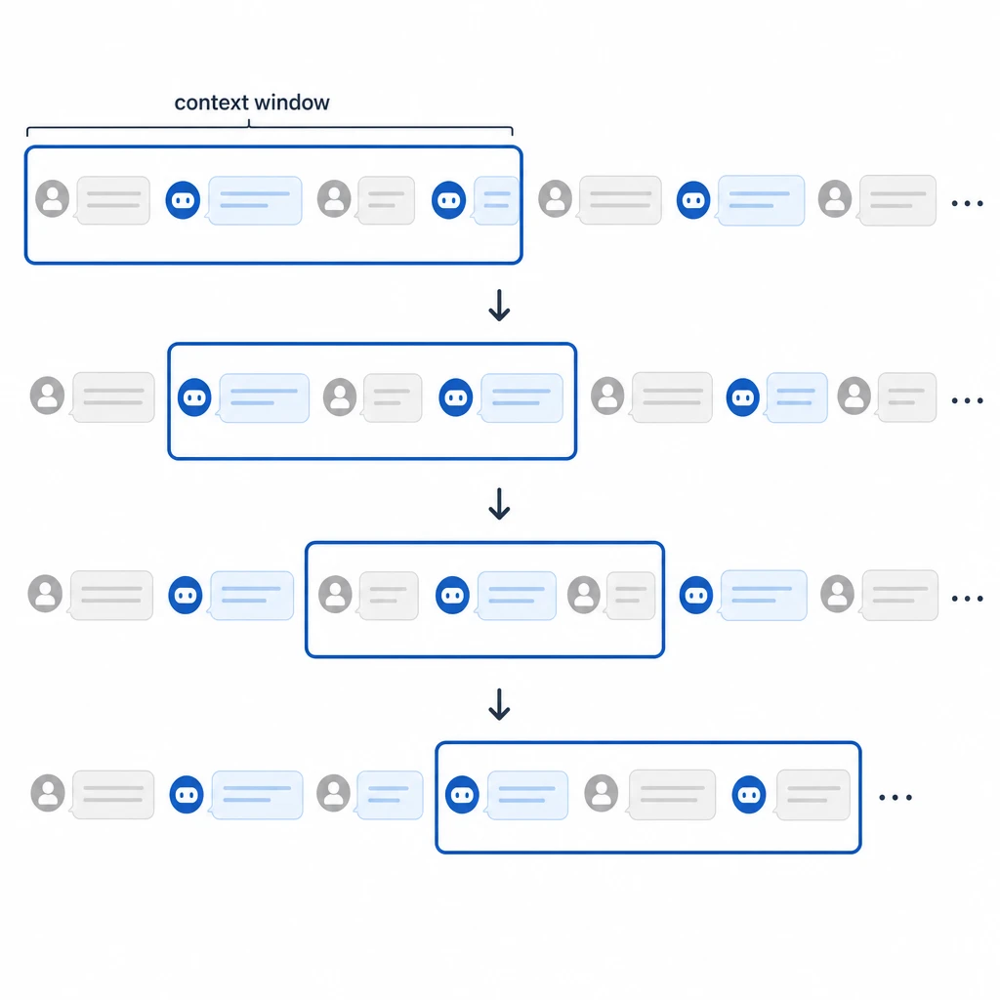
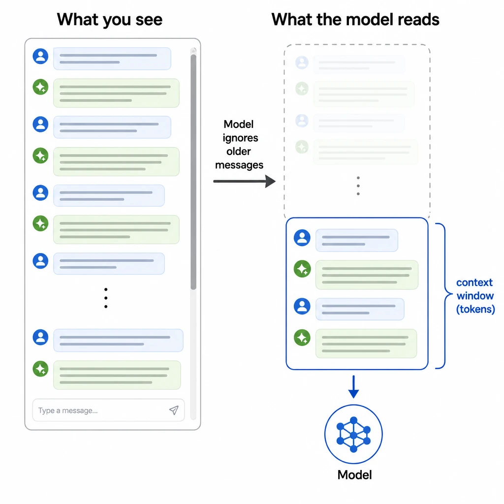
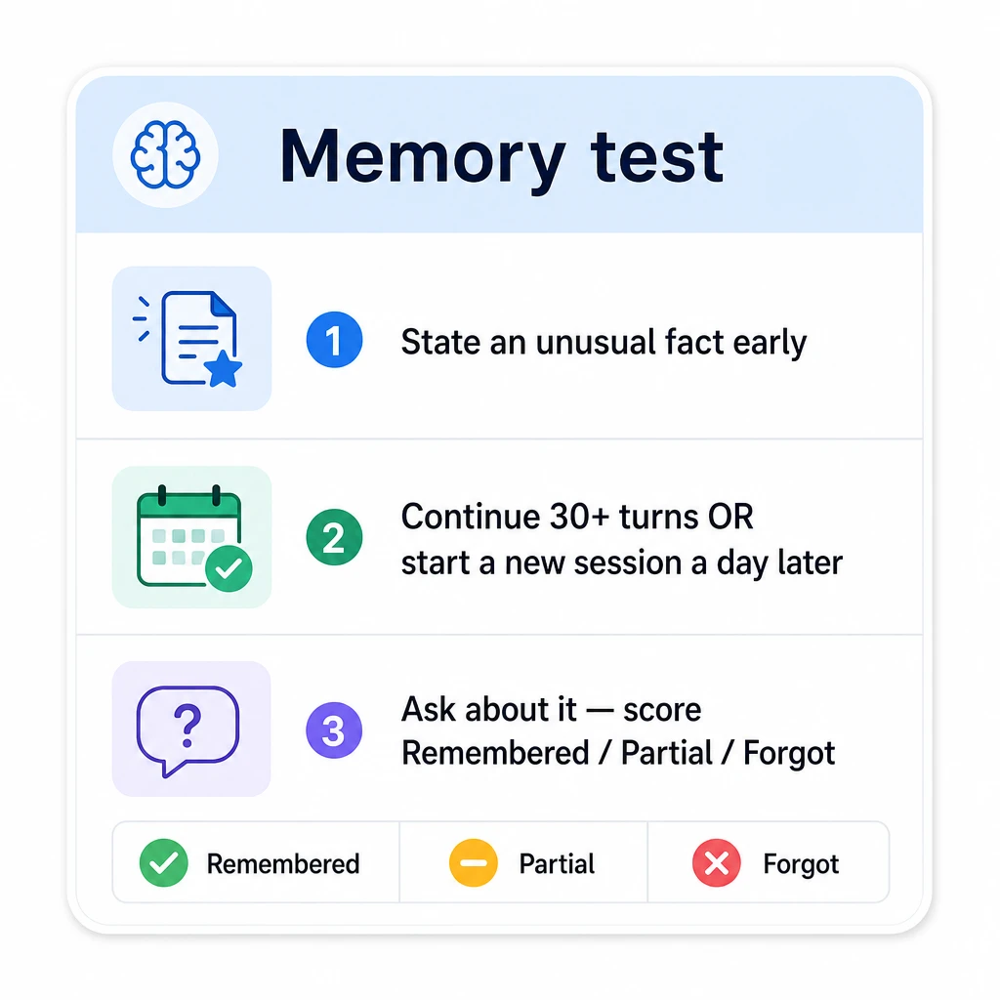

Why Does My AI Companion Forget? (And How to Fix It)
You tell your AI companion something that matters — your name, a moment from your last scene together, a preference you spelled out — and a handful of messages later it's gone, like the conversation never happened. The character you built draws a blank on the backstory you wrote yesterday. A story that felt alive resets to a stranger.
That's not a glitch, and you didn't break anything. Forgetting is built into how these models read a conversation. Every reply your companion sends is generated by re-reading a fixed-size slice of recent text, and whatever has slipped outside that slice is no longer available to it. Once you can see the mechanism, the fixes stop looking like a hidden setting you missed and start looking obvious.
This article walks through five things: the real reason your companion forgets, in plain English; a step-by-step trace of what happens to a single message as a chat gets long; why "more memory" isn't the clean fix it sounds like; a quick test to separate real memory from decorative memory; and concrete things you can do today.

Your companion has short-term memory, not a memory
Your AI companion forgets because it doesn't "remember" your conversation at all. It re-reads a limited window of recent text every time it replies, and anything outside that window isn't part of what it sees.
That window has a name: the context window. Think of it as the model's short-term working memory — the chunk of recent conversation it can take in at once. It's measured in tokens, which are word-pieces; roughly, a short word is one token and a longer one splits into two or three. The window holds a fixed number of them, and that's the ceiling.
There's no special "memory" hardware doing this. The model is a text predictor: hand it the window, it predicts what comes next. Whether that window holds a few thousand tokens or a few hundred thousand, it is still a single, finite slice — not a growing archive of your relationship.
Every message your companion writes starts from scratch. The model reads what's in the window, predicts the next words, and stops. There's no running mental model of you ticking along in the background between replies, no diary it consults. Next message, same process: read the window, generate, stop.
Here's the part that trips people up. The chat log on your screen is not the model's memory. The app saves your transcript so you can scroll back through it — that's a convenience built for the human, not a feed into the model. Your companion never reads your scrollback. It only ever works from what fits in the window. So "does my AI remember past conversations?" has an awkward answer: it remembers exactly as much as the window holds, and not one token more.
That also settles "how many messages does an AI companion remember?" There's no fixed number of messages. The limit is tokens, not turns, so a few long, detailed messages can fill the window faster than dozens of one-liners. Two people can have wildly different "memory" on the same app just by typing differently.
So if the window is everything the model can see, what becomes of a fact once the conversation outgrows it? Let's follow one.

What actually happens to one message as the chat grows [GAIN]
Here's the part no page seems to show you: a fact you typed stays available only until enough newer text crowds it out — and the instant it's evicted, the model genuinely can't see it anymore. So let's trace one fact, from the moment you type it to the moment it vanishes.
Turn 1 — you plant it. You write: "Remember, your name is Mara and you grew up on a fishing boat." That line sits near the front of the window. On every reply, the model re-reads it. Mara stays in character. She mentions the salt air, the nets, the cold early mornings. The continuity feels real because the fact is sitting right where the model can read it.
Turns 2 through 40 — it drifts back. Every message after that adds tokens, yours and hers alike. The window is a fixed size, so it behaves like a sliding frame: as fresh text enters one side, the oldest text gets nudged out the other. Your "Mara / fishing boat" line never moves on its own, but the live conversation keeps marching away from it. Forty turns later, it's hanging on at the very back.
The boundary — it gets dropped. Once the conversation's total tokens cross the window's limit, the oldest lines have to be evicted to make room for the new ones. "Mara grew up on a fishing boat" is now outside what the model can read. Nothing flagged it. No warning fired. The fact is simply gone from view — still sitting in your transcript, invisible to the model.
The next reply — the forgetting you feel. You mention the boat. Mara has no record of it, so she does what models do with a blank: she invents a detail that contradicts your story, or she asks "what boat?" The early part of your story just disappeared. That gut-punch — the character forgetting something the two of you established — is the single most common thing that yanks people out of a roleplay. We unpacked why it lands so hard in What Breaks Immersion in AI Roleplay.
There's a quieter version of this worth knowing about, because it hits even before a fact is fully evicted. Models read the middle of a long window worst. It's a documented finding — researchers call it "lost in the middle," where information buried in the center of a long context gets used far less reliably than information near the start or end, as Liu et al. showed in Lost in the Middle: How Language Models Use Long Contexts. So a detail can be technically still inside the window and effectively ignored anyway. The window isn't a perfect memory even while a fact is still in it.
The obvious response to all this is "just give the model a bigger window." It helps less than you'd hope. Here's why.
![Four-step horizontal flow diagram titled "What happens to one message". Step 1 "You type a fact" (bubble at left edge of a frame labeled context window). Step 2 "New messages push it back" (the bubble slides left as new bubbles enter from the right). Step 3 "It falls outside the window" (the bubble drops below the frame, faded, labeled "dropped"). Step 4 "Companion forgets" (a confused speech bubble "what boat?"). Clean editorial illustration, white background, sans-serif labels, no human likeness.](../images/why-ai-companion-forgets/image-3-four-step-horizontal-flow-diag.png)
Why a bigger context window isn't the fix (and what "context rot" means)
A bigger context window helps at the margins, but it doesn't cleanly fix forgetting — because larger windows cost more to run, and, worse, models get less accurate at using a window the fuller it gets. That second problem has a name now: people call it "context rot."
Start with cost. Reading more tokens on every reply means more compute on every reply, forever. That's why providers cap window sizes, charge more for the big ones, or quietly trim what they feed the model. "Just make it bigger" isn't free — somebody pays for every extra token, on every single message, for as long as the chat runs.
The deeper issue is accuracy, and this is what "context rot" points at. As a window fills up, the model attends worst to the middle of it — the same "lost in the middle" weakness from the last section, now playing out across a much larger span (Liu et al. found this degradation holds even for models explicitly built for long contexts). Cram the window with your whole chat history and the model won't reliably use all of it; the details stranded in the center get treated like background noise. A bigger window mostly gives the model more room to lose the thread. More capacity is not the same as better recall.
The honest takeaway: a context window is short-term memory by design. Scaling it up shoves the wall back a bit — your companion holds the storyline longer before it slips — but the wall is still there. That's why "why can't a bigger context window just fix this?" keeps resurfacing and never quite resolves. The window is the wrong tool for keeping anything permanently. Something else has to do that job.
So if a bigger window isn't real memory, what is? The split between short-term context and true persistent memory is the whole game.
Short-term context vs. true persistent memory
Real "memory" in an AI companion is a separate layer bolted on top of the context window: it saves chosen facts to storage and feeds them back into the conversation on future chats. So the honest question isn't "does it have memory?" — it's "which kind, and does it survive a new chat?"
This is what "memory features" actually do, and it pays to be precise. They don't make the model itself remember anything. They save a handful of key facts — your name, your preferences, your character's backstory — to a store that lives outside the conversation, then slot the relevant ones back into the context window when you return. It's re-injection, not recall. The model still only reads what's in the window; the memory layer just makes sure the facts that matter are present when it counts.
That mechanism explains why some apps feel like they remember across sessions while others reset to zero. A context-only app keeps nothing once the window clears — Character.AI historically worked this way, which is why people keep asking why it forgets them between sessions; the company has since added a separate memory layer of saved Facts and Story Memory that carries over into new chats, distinct from the in-chat context. A persistent-memory app reloads its saved facts at the start of a new chat, so your companion walks in already knowing who you are. Same underlying model, completely different experience, decided entirely by whether that extra layer exists.
One caution: a "memory" badge can be cosmetic. Plenty of apps advertise memory and ship something thin — a couple of pinned facts, or recall that quietly collapses the moment you open a fresh session. The table below lays out what each layer can and can't actually do.
| Short-term context (context window) | True persistent memory | |
|---|---|---|
| What it is | The recent conversation the model re-reads on every reply, measured in tokens | A saved store of chosen facts, re-injected into the conversation on future chats |
| What it can do | Hold the current scene; keep continuity within one long-enough chat | Recall your name, preferences, and character/backstory facts across sessions |
| What it can't | Survive past its token limit; recall anything evicted or never saved | Remember everything — it stores selected facts, not your whole history |
| Survives a new chat? | No — it clears when the window resets | Yes — that's the point (within limits) |
On the persistent-memory side of that table, apps like Pleasur.AI keep a saved store of character facts plus saved chat history that reloads when you open a new session — exactly the re-injection layer described above, no more than that. The caveat in the table still applies: it holds the facts you set, not every word you've ever typed, and it's bounded, not "forever." If you want to see how two companions stack up on recall specifically, we ran that comparison in OpenMind AI vs Pleasur.ai: Which One Actually Remembers You?. For a side-by-side read on which companions genuinely hold onto you, we ranked them in Best AI Girlfriend With Memory.
Knowing the two layers exist is no use if you can't tell which one your app actually has. So here's a test — and a short list of fixes.
How to make your companion remember (test it, then fix it)
You can't fix forgetting with a buried setting, but you can do three concrete things: test whether your app has real memory, re-anchor the facts that matter as you chat, and — if it fails the test — move to a companion built to remember.
Run the test first. Drop a specific, unusual fact early in a chat: "my favorite color is oxblood; your name is Mara." Then either keep chatting for 30-plus turns, or — the stricter version — close the app and start a brand-new session a day later. Now ask about it. Score the answer: remembered, partial, or forgot. That single test tells you whether the memory is real or decorative, and it works on any companion. For the full protocol and scorecard, we wrote it up in Best AI Girlfriend With Memory.
Re-anchor as you go. This is the fix you can use right now, on whatever app you're already on. Every dozen turns or so, restate the facts that matter — drop a quick recap straight into the chat: "quick recap: I'm Sam, you're Mara, we're mid-fishing-trip scene." That one line shoves the key facts back to the front of the window, where the model is actively reading. It isn't elegant, but it's the most reliable way to keep a long roleplay coherent on a context-only app.
Pro tip: a one-line recap every dozen turns beats a paragraph every fifty. Little and often keeps the facts you care about inside the window instead of letting them drift out of reach.
Set the character up once. If your app has a persistent store, feed it. Bake the backstory, personality, and preferences into the character at creation, so the long-term layer always has something stable to reload. In Pleasur.AI's AI Companion Creator, you set appearance, personality, and backstory in a single pass, and saved chats resume across sessions — so every new conversation starts with the facts that define your companion already loaded, instead of you re-typing them. Hold it to the same test above that you'd run on any app: state a fact, start a fresh session, check. The memory here is a real capability, but a bounded one — it stores the facts you set, not every word you've ever typed, and there's no "never forgets."
If it fails, switch. When your current app flunks the new-session test, that's a design choice the app made — not something you did wrong. The remedy is to pick one whose memory survives a fresh chat. That's what the test is for: it turns a vague "why does this keep forgetting me?" into a decision you can act on.

The short version
Your companion forgets not because it's broken but because it reads your chat through a fixed-size window that drops the oldest text first. Real continuity doesn't come from a wider window — it comes from a separate persistent-memory layer that saves your key facts and reloads them next time. And the only proof a layer actually works is the test you run yourself.
So run it. State an odd fact, start a new session, and see whether your companion remembers. If it fails, find out which companions actually hold onto you in Best AI Girlfriend With Memory. And if you'd rather start clean, set a character up once so the memory layer has something solid to hold — begin in the AI Companion Creator.
Editor notes / Voice-flagged statements (review)
These are opinionated-voice statements (population quantifiers, superlatives, comparative absolutes, and unlinked brand mentions). They are flagged for editorial judgment only — NOT auto-linked or auto-cited:
- L41 / L55: "context rot" — informal/community-coined term, attributed as "people call it." No formal citation; editor may add one if a canonical source is desired.
- L40: "the single most common thing that yanks people out of a roleplay" — superlative; supported in spirit by the linked immersion article but stated as voice.
- L53: "That's why providers cap window sizes, charge more for the big ones, or quietly trim what they feed the model" — population claim about providers; left as voice, no per-provider citation.
- L71: "Plenty of apps advertise memory and ship something thin" — population claim about competitors; intentionally unlinked voice.
- L69: "Character.AI historically worked this way" — brand mention; the company's memory-layer addition is now cited inline; the "historically context-only" framing remains partly voice.
- L80: "apps like Pleasur.AI keep a saved store of character facts plus saved chat history" — first-party feature description; consistent with brand-reference notes (bounded memory, no "forever" claim).